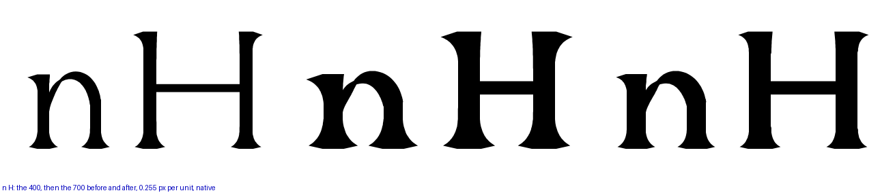
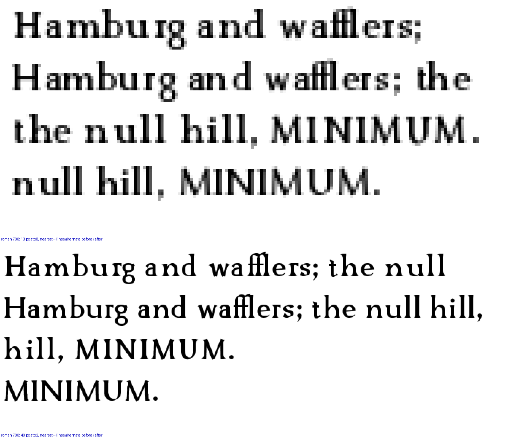
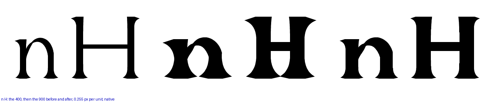
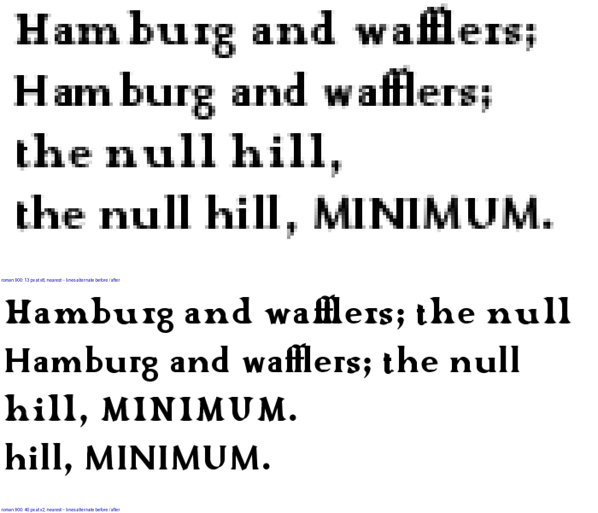
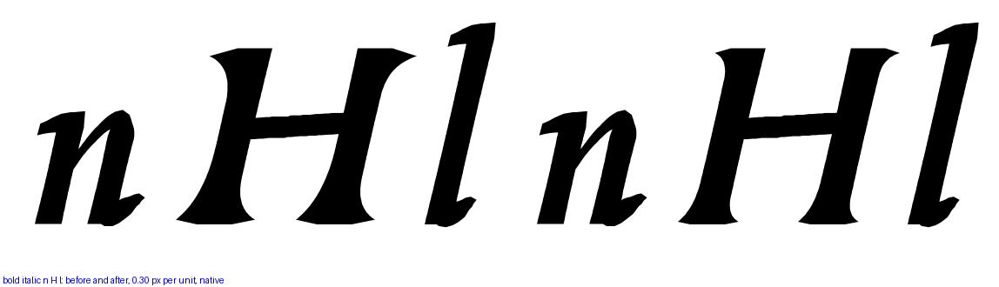
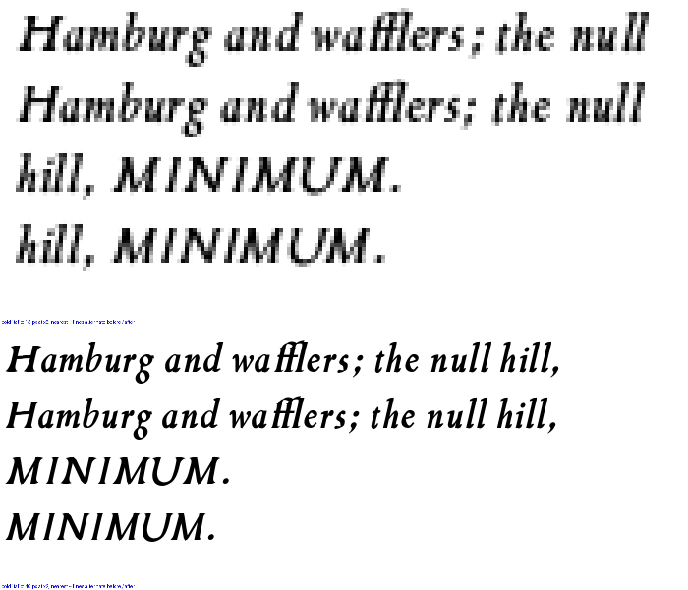

"reduce the amount of flare serif on bold. I would like the serif to be optically similar to the 400 serif" — and on the ladder, "b wins." The wedge above the 400 is now the 400’s own: 52 long, 105 deep, drop 17, where it had been 1.73× that at the 700 and 2.2× at the 900. Both styles. Each row: the 400 for reference, then the weight before and after. Native pixels.






One kern pair: the fitter measures the ink in the band, and with smaller wedges it drew the V and the I closer at the 700 (0.0108 em under the floor → touching at −0.0026). The pair carries −108 at the 400; above stem 84 it gives back 8. Every other count is at its baseline; the ExtraLight 200 keeps its stem-scaled wedge, which was not asked.